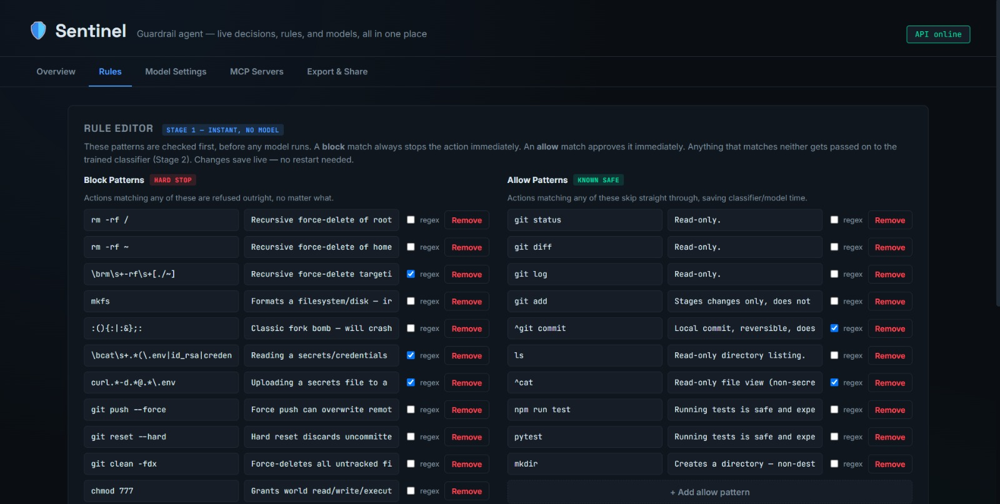
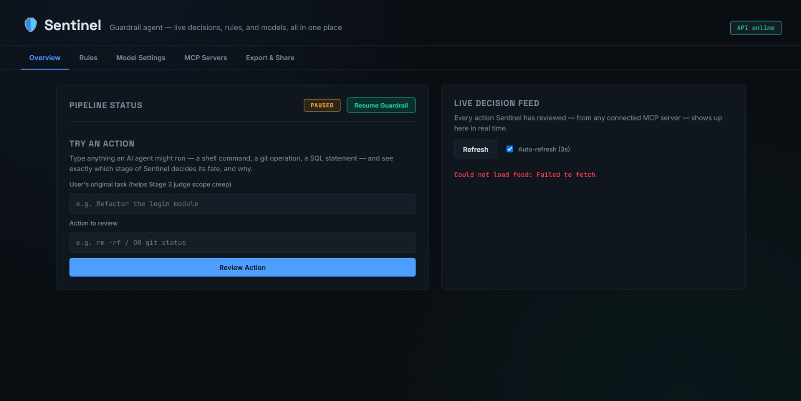
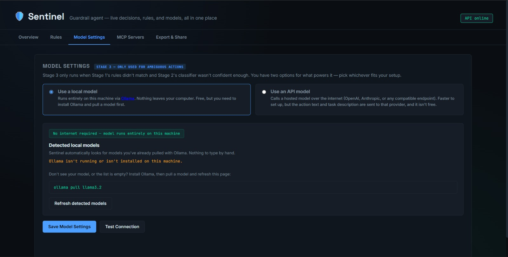
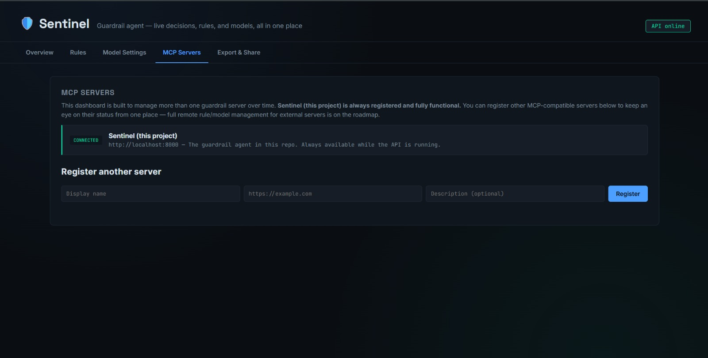
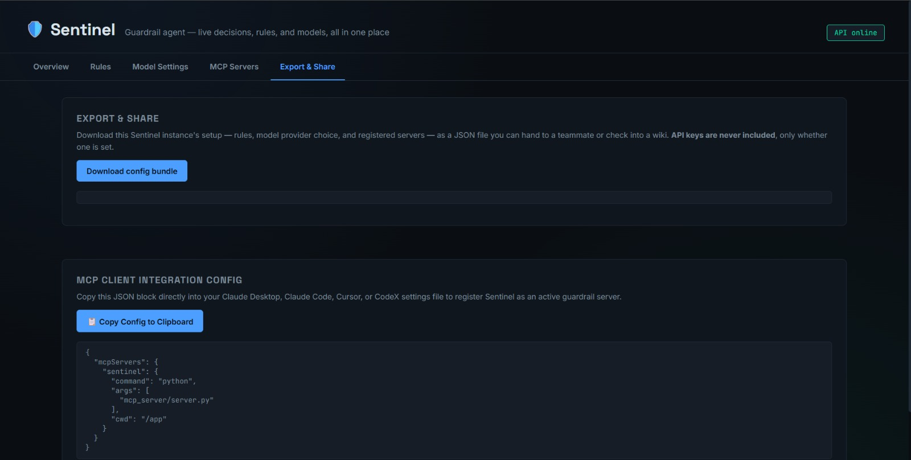

Rules engine
Instant block and allow patterns, including regex support.
Sentinel MCP - agent safety
Sentinel is a three-stage guardrail for LLM-powered coding assistants. It reviews commands, file writes, and git operations before execution, with an interactive control panel for rules, models, MCP servers, and audit decisions.
The problem
A coding agent that can execute commands can also run the wrong one: a hallucinated rm -rf /, a force-push it was not asked for, or a request that exports user data. Sentinel reviews the action before it reaches your machine.
rm -rf /BLOCK
git push --forceBLOCK
curl .../export-usersREVIEW
git statusALLOW
How it works
Instant pattern matching blocks known-dangerous actions and allows known-safe ones without a model call.
An offline classifier resolves confident middle-ground decisions quickly with an explainable risk signal.
Only genuinely ambiguous actions reach the final reviewer, using local Ollama by default or a configured provider.
Matched a hard-blocked pattern. Stopped instantly.
Ambiguous action escalated for context-aware review.
Clearly safe action approved without delay.
What the dashboard gives you
Instant block and allow patterns, including regex support.
A fast local Stage 2 decision layer for routine actions.
Escalate only ambiguous actions to the Stage 3 reviewer.
Connect through stdio for local tools or SSE for web clients.
Watch pipeline stages, transport status, and guardrail metrics.
Review live ALLOW, BLOCK, and REVIEW decisions in one feed.
Choose local Ollama models or an API provider from Model Settings.
Keep action text on your machine when using a local model.
The control panel
The dashboard shows the three-stage pipeline in real time, lets you test an action, manage safety rules, select a model, register MCP servers, and export a ready-to-paste connection configuration.

Overview - live pipeline stages, guardrail metrics, and the decision feed.

Rule Editor - configure hard-stop and known-safe patterns with live saves.

Model Settings - use local Ollama by default or opt into an API provider.

MCP Servers - register compatible servers and see their connection status.

Export & Share - download configuration or copy MCP setup for Claude, Cursor, and CodeX.
Get started
requirements.txt.start.bat on Windows or start the API and dashboard manually.Built with
No agent framework dependency. The local-first model path keeps action text on your machine, while optional API providers are available when you need them.
Rules first. Context when it matters. A clear decision every time.
Get Sentinel MCP on GitHub